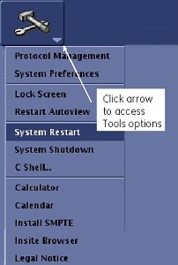

System Startup and Shutdown
 |
|
1 Starting Up Host PC
If the Host PC is powered off, press the power button to begin the startup process.
As the Host PC starts up, the Linux operating system launches. A welcome screen displays with a login prompt.
2 Logging Onto System
Most service functionality, including software updates and patches, can be performed with operator-level privileges. Because logging on as a super user allows you to make changes that can do irreparable damage to the system, do not log in as root unless necessary.
Log in with an operator-level user name and password. For example, user name: sdc and pw: adw2.0.
It is possible that the customer changed the default password. If you cannot log in, contact the customer for the correct password.
Logging on as an operator brings up the Common Services Desktop, and a window displays the message: Please do not interact with the system until this message disappears.
During some startups, restarts, and shutdowns, the system may seem to have stalled. The system startup process can take an extended period of time. Give the system at least 30 minutes before calling the GE Online Center.
3 Restarting Host PC
Restarting the Host PC shuts down the system safely, and automatically starts the system up again. Restarts are often required to finalize changes or updates.
To restart the system, click the arrow on the Tools High Level Access tab, select , and click Yes to confirm the restart.
Figure 1. Tools Tab System Restart

4 Shutting Down Host PC
Shutting down the Host PC shuts down the system safely and turns off the power to the Host PC.
To shut down the system, click the arrow on the Tools High Level Access tab, select , and click Yes to confirm the shut down.